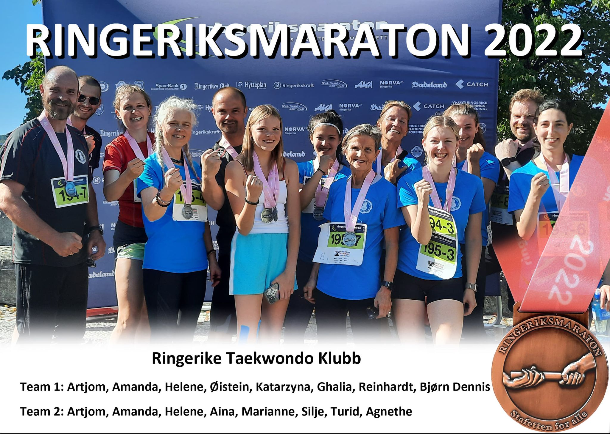
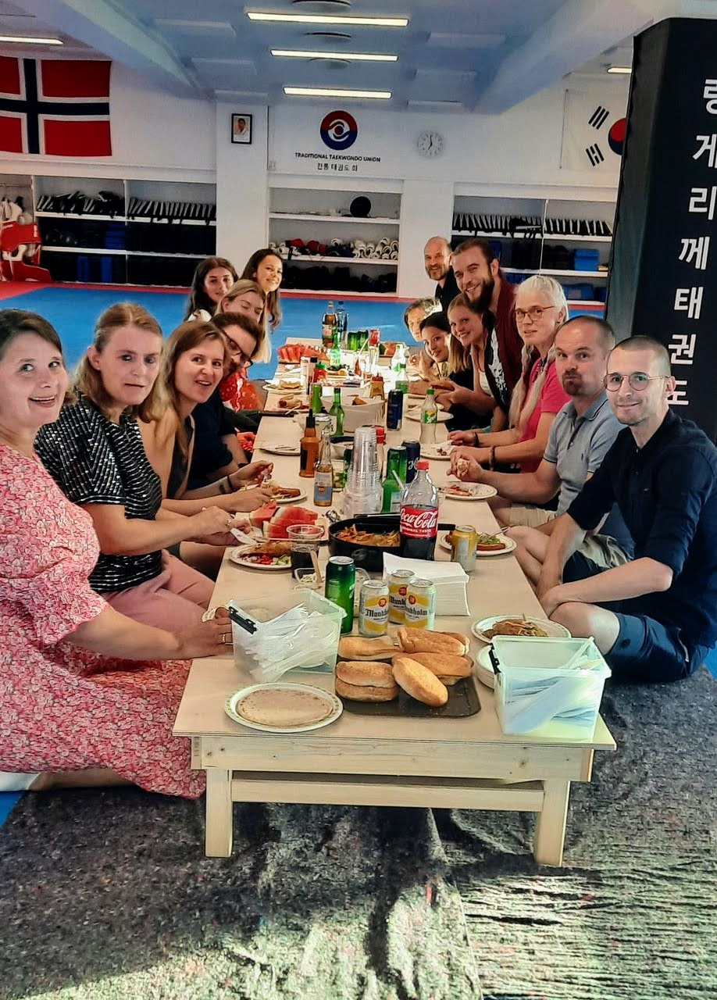
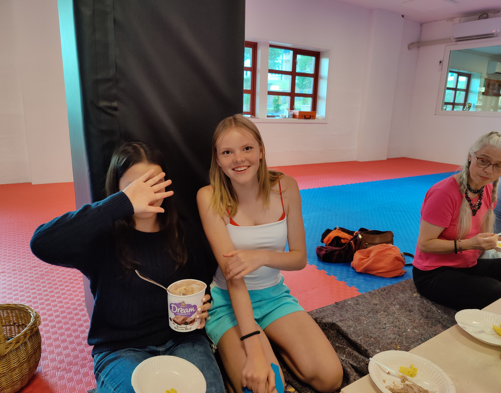
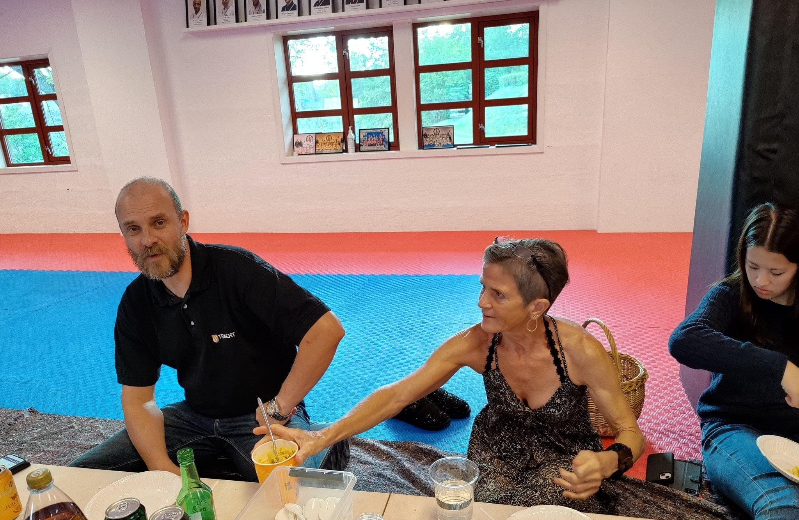
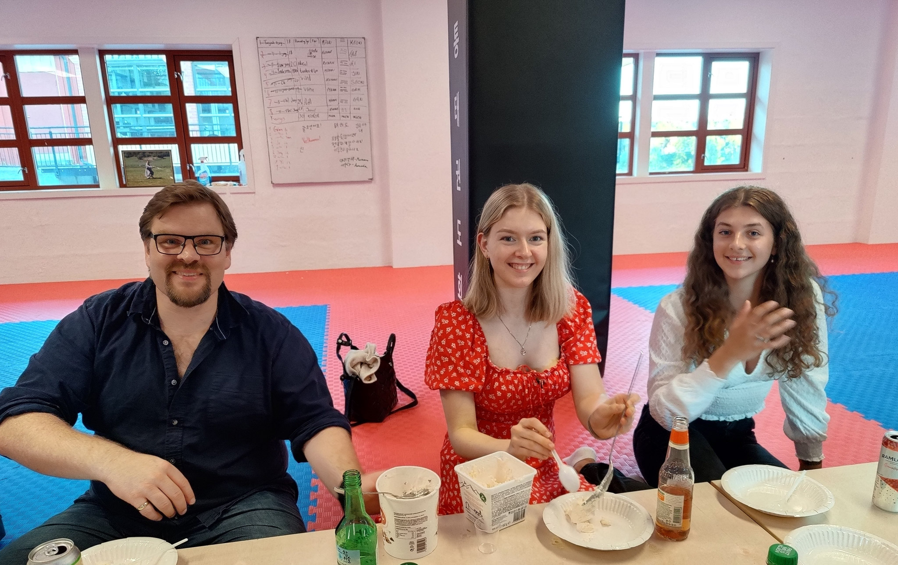
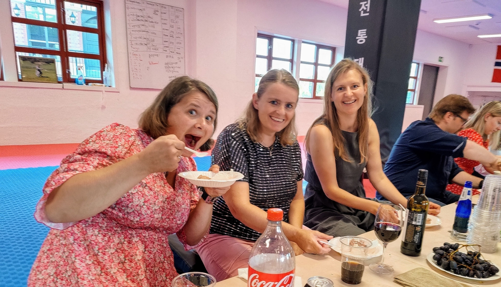
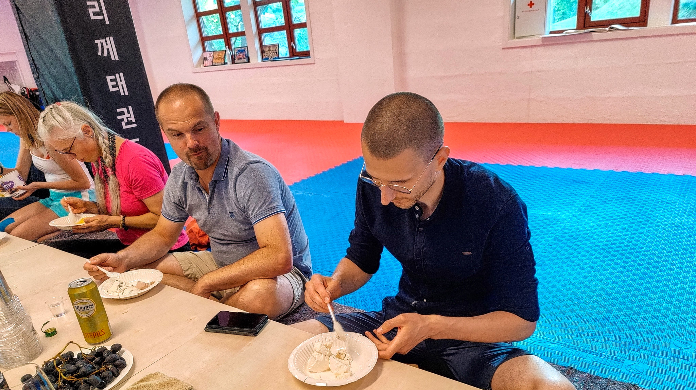

Innlegg
Bra innsats i årets Ringeriksmaraton

Etter flere år uten, var det i år endelig klart for Ringeriksmaraton. Klubben var representert med to lag i Mix-klassen. På grunn av noen kjedelige skader på enkelte av de planlagte løperne endte det opp med å være 13 deltakere til sammen. Dette medførte at de tre første etappene ble løpt med to stafettpinner og to startnummer. Lagene bestod av:
Totaltiden ble henholdsvis 4:34:29 og 4:39:51 på de to lagene. Raskeste snitthastighet var det Agnethe Reymert som stod for, med en sistetappe med 5:11 min/km. Alle deltakerne gjennomførte uten skader eller andre problemer, og med godt humør! Etter løpet var det sosial samling med påfyll av både vått og tørt og en hyggelig stemning for løpere og støtteapparat. Takk for en trivelig dag og kveld, så håper vi at alle fikk kjenne en form for løpeglede og inspirasjon til å være med neste år og løpe vel så fort!





